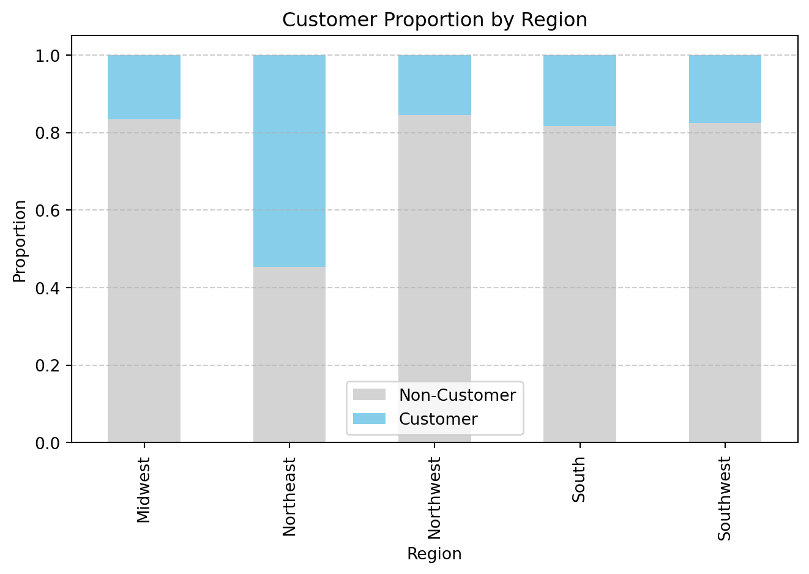
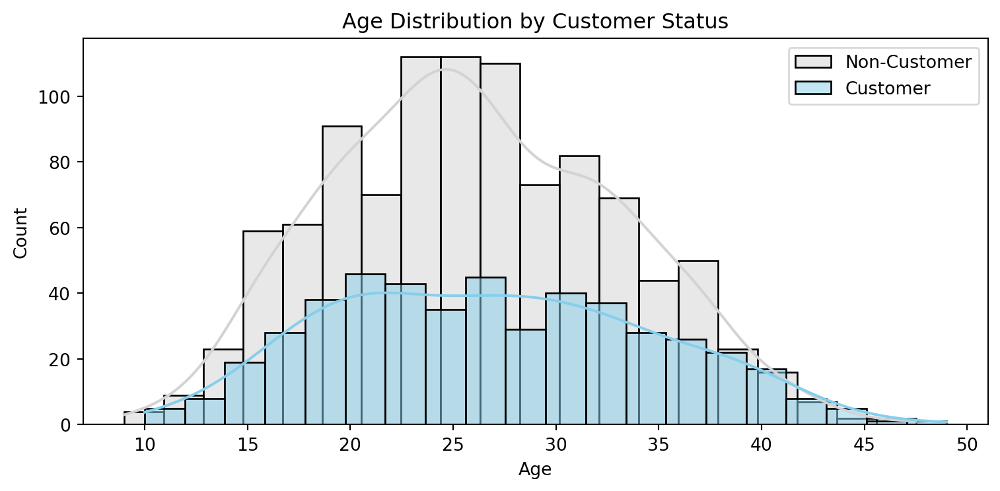
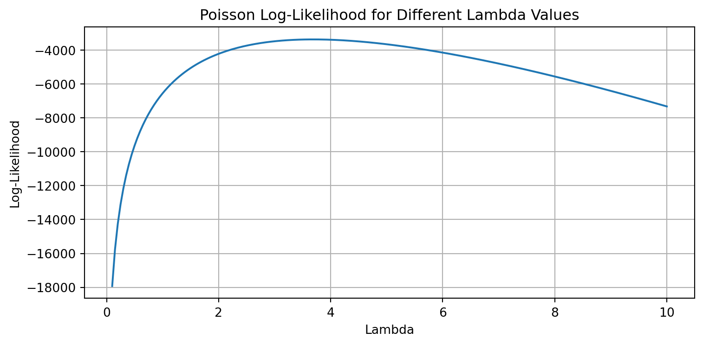
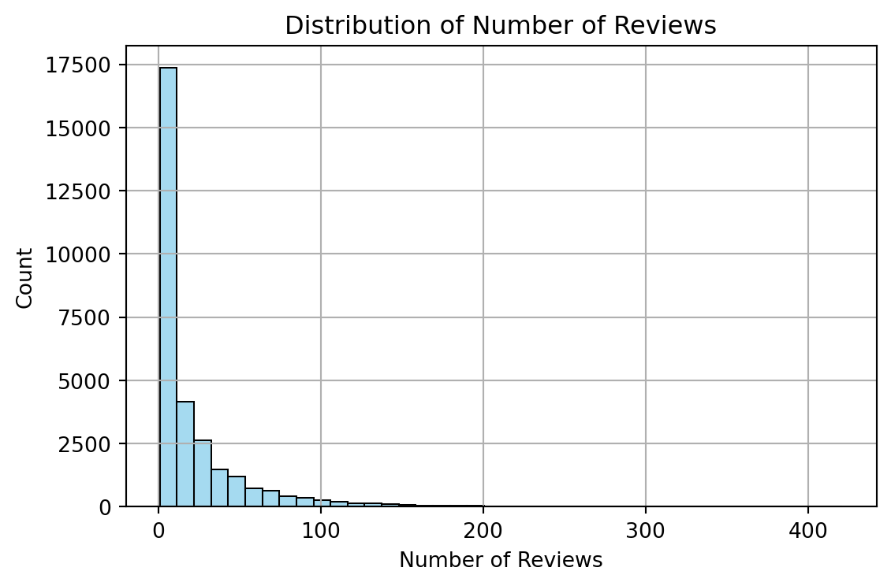
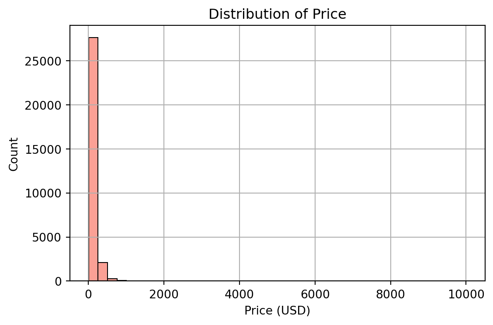
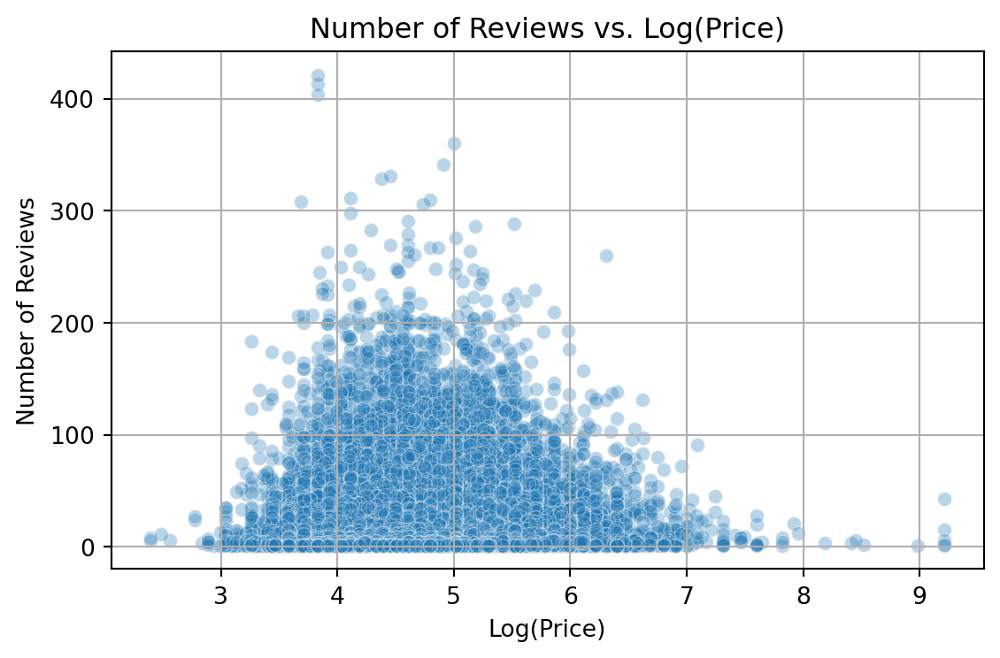
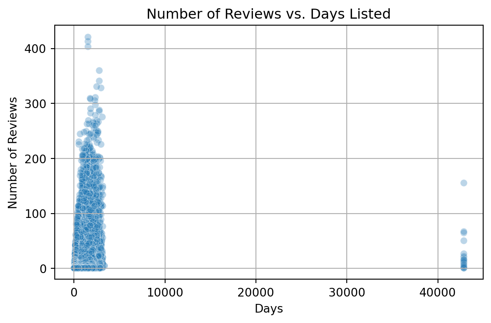
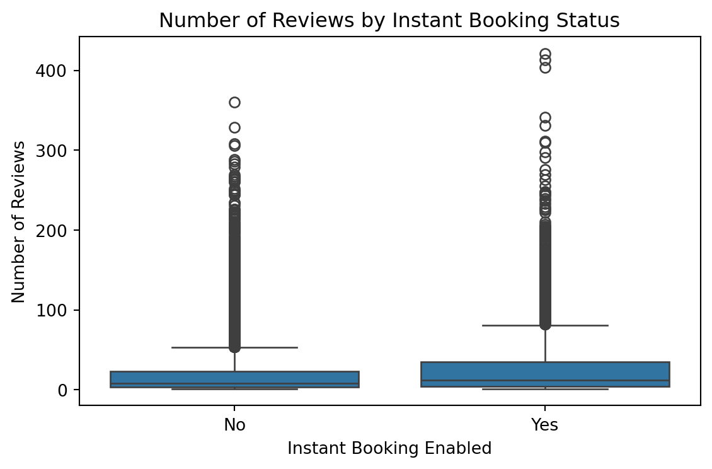
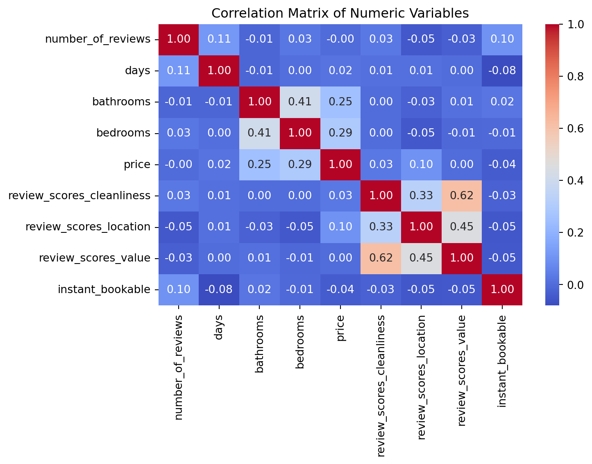

| patents | region | age | iscustomer | |
|---|---|---|---|---|
| 0 | 0 | Midwest | 32.5 | 0 |
| 1 | 3 | Southwest | 37.5 | 0 |
| 2 | 4 | Northwest | 27.0 | 1 |
| 3 | 3 | Northeast | 24.5 | 0 |
| 4 | 3 | Southwest | 37.0 | 0 |
Poisson Regression Examples
Blueprinty Case Study
Introduction
Blueprinty is a small firm that makes software for developing blueprints specifically for submitting patent applications to the US patent office. Their marketing team would like to make the claim that patent applicants using Blueprinty’s software are more successful in getting their patent applications approved. Ideal data to study such an effect might include the success rate of patent applications before using Blueprinty’s software and after using it. Unfortunately, such data is not available.
However, Blueprinty has collected data on 1,500 mature (non-startup) engineering firms. The data include each firm’s number of patents awarded over the last 5 years, regional location, age since incorporation, and whether or not the firm uses Blueprinty’s software. The marketing team would like to use this data to make the claim that firms using Blueprinty’s software are more successful in getting their patent applications approved.
Data
We observe that the distribution of Blueprinty customers across regions is not uniform. For example, the Northeast has a noticeably higher proportion of customers compared to other regions, while the Midwest and South appear to have relatively fewer. This suggests that region may be correlated with customer status and should be accounted for in later analysis to avoid confounding.

Blueprinty customers are not selected at random. It may be important to account for systematic differences in the age and regional location of customers vs non-customers.
The age distribution of customers and non-customers shows a meaningful difference. On average, customers are older: the mean age of customers is about 26.9 years, compared to 26.1 years for non-customers. This is also visible in the histogram, where the customer age distribution is skewed slightly to the right. Non-customers are more concentrated in the 20–30 age range, while customers have a wider spread including more older firms. This suggests that age is correlated with customer status, and it reinforces the importance of controlling for age in the regression analysis.

iscustomer
0 26.101570
1 26.900208
Name: age, dtype: float64Estimation of Simple Poisson Model
Since our outcome variable of interest can only be small integer values per a set unit of time, we can use a Poisson density to model the number of patents awarded to each engineering firm over the last 5 years. We start by estimating a simple Poisson model via Maximum Likelihood.
We assume that the number of patents \(Y\) follows a Poisson distribution with parameter \(\lambda\):
\[ f(Y|\lambda) = \frac{e^{-\lambda} \lambda^Y}{Y!} \]
The log-likelihood function is:
\[ \log L(\lambda \mid Y) = \sum_i \left[ -\lambda + Y_i \log \lambda - \log(Y_i!) \right] \]
To evaluate this log-likelihood numerically, we define a Python function:
import numpy as np
from scipy.special import gammaln
import pandas as pd
# Load blueprinty data
df = pd.read_csv("../project3/blueprinty.csv")
# Log-likelihood function
def poisson_loglikelihood(lmbda, Y):
if lmbda <= 0:
return -np.inf
return np.sum(-lmbda + Y * np.log(lmbda) - gammaln(Y + 1))
# Extract Y data
Y = df["patents"].valuesWe can then plot this function over a range of lambda values to understand where the likelihood is maximized.
import matplotlib.pyplot as plt
import pandas as pd
# Load blueprinty data
df = pd.read_csv("../project3/blueprinty.csv")
# Try a range of lambda values
lambda_values = np.linspace(0.1, 10, 200)
loglik_values = [poisson_loglikelihood(lmbda, Y) for lmbda in lambda_values]
# Plot
plt.figure(figsize=(8, 4))
plt.plot(lambda_values, loglik_values)
plt.xlabel("Lambda")
plt.ylabel("Log-Likelihood")
plt.title("Poisson Log-Likelihood for Different Lambda Values")
plt.grid(True)
plt.tight_layout()
plt.show()
Taking the derivative of the log-likelihood function:
\[ \frac{d}{d\lambda} \log L(\lambda) = -n + \frac{1}{\lambda} \sum_i Y_i \]
Setting the derivative equal to zero:
\[ -n + \frac{1}{\lambda} \sum_i Y_i = 0 \Rightarrow \lambda_{\text{MLE}} = \frac{1}{n} \sum_i Y_i = \bar{Y} \]
So the MLE of \(\lambda\) is simply the sample mean.
# Sample mean of patents = MLE for lambda
lambda_mle = df["patents"].mean()
lambda_mle3.6846666666666668To confirm our analytical result, we now estimate the MLE of \(\lambda\) numerically using scipy.optimize.
from scipy.optimize import minimize
# Negative log-likelihood for minimization
def neg_loglik(lmbda):
return -poisson_loglikelihood(lmbda[0], Y)
# Use optimizer to find lambda MLE
result = minimize(neg_loglik, x0=[2], bounds=[(1e-5, None)])
result message: CONVERGENCE: REL_REDUCTION_OF_F_<=_FACTR*EPSMCH
success: True
status: 0
fun: 3367.683772235095
x: [ 3.685e+00]
nit: 6
jac: [-4.547e-05]
nfev: 14
njev: 7
hess_inv: <1x1 LbfgsInvHessProduct with dtype=float64>We verify the MLE numerically by using optimization to minimize the negative log-likelihood. The optimizer returns a value very close to the sample mean of Y, confirming our analytical derivation.
Estimation of Poisson Regression Model
Next, we extend our simple Poisson model to a Poisson Regression Model such that \(Y_i = \text{Poisson}(\lambda_i)\) where \(\lambda_i = \exp(X_i'\beta)\). The interpretation is that the success rate of patent awards is not constant across all firms (\(\lambda\)) but rather is a function of firm characteristics \(X_i\). Specifically, we will use the covariates age, age squared, region, and whether the firm is a customer of Blueprinty.
We begin by generalizing our Poisson log-likelihood function to incorporate covariates. Instead of estimating a single \(\lambda\), we now assume that each firm \(i\) has its own rate \(\lambda_i = \exp(X_i'\beta)\), where \(X\) is the matrix of covariates and \(\beta\) is the parameter vector.
We modify our likelihood function to take both \(X\) and \(\beta\) as inputs, and use the exponential link to ensure all predicted rates remain positive.
import numpy as np
# Poisson regression log-likelihood
def poisson_regression_loglik(beta, Y, X):
Xb = X @ beta
lambdas = np.exp(Xb)
loglik = np.sum(-lambdas + Y * Xb - gammaln(Y + 1))
return -loglik # negative log-likelihood for minimizationTo estimate the Poisson regression model, we numerically maximize the log-likelihood with respect to the parameter vector \(\beta\). We use Python’s optimization routine to find the MLE and obtain the Hessian matrix at the optimum.
We then use the inverse of the negative Hessian to approximate the variance-covariance matrix of the estimates. The square roots of the diagonal entries give us standard errors for each coefficient.
import numpy as np
import pandas as pd
from scipy.special import gammaln
from scipy.optimize import minimize
df = pd.read_csv("../project3/blueprinty.csv")
# Create age_squared
df["age_squared"] = df["age"] ** 2
# Create region dummy variables (drop Midwest as baseline automatically)
region_dummies = pd.get_dummies(df["region"], prefix="region", drop_first=True)
# Merge region dummies into df
df = pd.concat([df, region_dummies], axis=1)
# Define outcome variable
Y = df["patents"].values
# Define covariates (excluding one region dummy as baseline)
X = df[["age", "age_squared", "region_Northeast", "region_Northwest", "region_South", "region_Southwest", "iscustomer"]].copy()
# Add intercept
X.insert(0, "intercept", 1)
X = X.values
# Define Poisson regression log-likelihood
def poisson_regression_loglik(beta, Y, X):
beta = np.asarray(beta, dtype=float)
X = np.asarray(X, dtype=float)
Y = np.asarray(Y, dtype=float)
# Ensure dot product result is a 1D array
Xb = np.dot(X, beta).flatten()
# This will now safely apply exp to each element
lambdas = np.exp(Xb)
loglik = np.sum(-lambdas + Y * Xb - gammaln(Y + 1))
return -loglik
# Initial guess for beta
init_beta = np.zeros(X.shape[1])
# Run optimization
res = minimize(poisson_regression_loglik, init_beta, args=(Y, X), method="BFGS")
# Extract estimated coefficients
beta_hat = res.x
# Extract inverse Hessian
hessian_inv = res.hess_inv
# Compute standard errors
std_errors = np.sqrt(np.diag(hessian_inv))As a validation step, we fit the same model using Python’s built-in generalized linear model (GLM) function with a Poisson family. We compare the estimated coefficients and standard errors from our custom likelihood with the results from sm.GLM to confirm consistency.
import statsmodels.api as sm
# Select relevant covariates and convert to float
X_glm = df[["age", "age_squared", "region_Northeast", "region_Northwest", "region_South", "region_Southwest", "iscustomer"]].astype(float)
# Add intercept column
X_glm = sm.add_constant(X_glm)
# Convert Y to float
Y_glm = df["patents"].astype(float)
# Fit Poisson regression model
glm_model = sm.GLM(Y_glm, X_glm, family=sm.families.Poisson()).fit()
# Output formatted regression table
glm_model.summary2().tables[1][["Coef.", "Std.Err.", "P>|z|"]]| Coef. | Std.Err. | P>|z| | |
|---|---|---|---|
| const | -0.508920 | 0.183179 | 5.464935e-03 |
| age | 0.148619 | 0.013869 | 8.539597e-27 |
| age_squared | -0.002970 | 0.000258 | 1.131496e-30 |
| region_Northeast | 0.029170 | 0.043625 | 5.037205e-01 |
| region_Northwest | -0.017575 | 0.053781 | 7.438327e-01 |
| region_South | 0.056561 | 0.052662 | 2.828066e-01 |
| region_Southwest | 0.050576 | 0.047198 | 2.839141e-01 |
| iscustomer | 0.207591 | 0.030895 | 1.827509e-11 |
The estimated coefficients indicate how each variable affects the expected number of patents, on the log scale.
The coefficient on age is positive and statistically significant, suggesting that older firms tend to receive more patents. The negative coefficient on age_squared indicates a concave relationship: the marginal effect of age decreases with age.
Region variables are not statistically significant, meaning that geographic location (relative to the baseline) does not have a strong effect on patent counts.
Most importantly, the coefficient on iscustomer is positive and highly significant (p < 0.001). This implies that, controlling for other firm characteristics, Blueprinty customers tend to receive more patents than non-customers.
To better understand the effect of using Blueprinty’s software, we simulate two hypothetical scenarios:
- \(X_0\): all firms are treated as non-customers (iscustomer = 0)
- \(X_1\): all firms are treated as customers (iscustomer = 1)
We use our fitted model to generate predicted patent counts under both scenarios, and calculate the average difference. This provides an interpretable estimate of the average treatment effect of using the software.
# Make sure beta_hat is numpy array
beta_hat = glm_model.params.to_numpy()
# Reconstruct X
X_full = df[["age", "age_squared", "region_Northeast", "region_Northwest", "region_South", "region_Southwest", "iscustomer"]].copy()
X_full.insert(0, "intercept", 1)
# Build X_0 (non-customers)
X_0 = X_full.copy()
X_0["iscustomer"] = 0
# Build X_1 (customers)
X_1 = X_full.copy()
X_1["iscustomer"] = 1
# Convert to numpy matrices
X_0 = X_0.to_numpy(dtype=float)
X_1 = X_1.to_numpy(dtype=float)
# Predict expected patent counts
lambda_0 = np.exp(X_0 @ beta_hat)
lambda_1 = np.exp(X_1 @ beta_hat)
# Average treatment effect
treatment_effect = np.mean(lambda_1 - lambda_0)
treatment_effect0.7927680710452553To estimate the average treatment effect of Blueprinty’s software, we simulated two counterfactual datasets: one where all firms are treated as non-customers and one where all are treated as customers. Using our fitted Poisson regression model, we predicted the number of patents in each scenario.
On average, being a customer is associated with an increase of approximately 0.79 patents over 5 years. This suggests that Blueprinty’s software may positively impact patent success, even after accounting for other firm characteristics.
AirBnB Case Study
Introduction
AirBnB is a popular platform for booking short-term rentals. In March 2017, students Annika Awad, Evan Lebo, and Anna Linden scraped of 40,000 Airbnb listings from New York City. The data include the following variables:
Exploratory Data Analysis
The outcome variable number_of_reviews is highly right-skewed, with most listings receiving very few reviews. The median is only 8 reviews, while the maximum exceeds 400. This justifies the use of a count model such as Poisson regression.
The distribution of price is also extremely skewed. While the median nightly rate is around $103, the maximum reaches $10,000. This indicates the presence of substantial outliers, and we may consider applying a log transformation before modeling.
Review scores (cleanliness, location, value) are generally high and compressed toward the upper bound of 10. The days variable, representing how long a listing has been active, varies widely across listings, with a mean of about 3 years.
Overall, this initial exploration supports our modeling strategy using number_of_reviews as the dependent variable and listing characteristics as predictors.
| number_of_reviews | days | bathrooms | bedrooms | price | review_scores_cleanliness | review_scores_location | review_scores_value | instant_bookable | room_type_Private room | room_type_Shared room | |
|---|---|---|---|---|---|---|---|---|---|---|---|
| 0 | 150 | 3130 | 1.0 | 1.0 | 59 | 9.0 | 9.0 | 9.0 | 0 | True | False |
| 1 | 20 | 3127 | 1.0 | 0.0 | 230 | 9.0 | 10.0 | 9.0 | 0 | False | False |
| 3 | 116 | 3038 | 1.0 | 1.0 | 89 | 9.0 | 9.0 | 9.0 | 0 | False | False |
| 5 | 60 | 2981 | 1.0 | 1.0 | 212 | 9.0 | 9.0 | 9.0 | 0 | False | False |
| 6 | 60 | 2981 | 1.0 | 2.0 | 250 | 10.0 | 9.0 | 10.0 | 0 | False | False |


| number_of_reviews | price | days | review_scores_cleanliness | review_scores_location | review_scores_value | |
|---|---|---|---|---|---|---|
| count | 30160.000000 | 30160.000000 | 30160.000000 | 30160.000000 | 30160.000000 | 30160.000000 |
| mean | 21.170889 | 140.206863 | 1139.711174 | 9.201724 | 9.415351 | 9.333952 |
| std | 32.007541 | 188.392314 | 1252.303675 | 1.114261 | 0.843185 | 0.900472 |
| min | 1.000000 | 10.000000 | 7.000000 | 2.000000 | 2.000000 | 2.000000 |
| 25% | 3.000000 | 70.000000 | 584.000000 | 9.000000 | 9.000000 | 9.000000 |
| 50% | 8.000000 | 103.000000 | 1041.000000 | 10.000000 | 10.000000 | 10.000000 |
| 75% | 26.000000 | 169.000000 | 1592.000000 | 10.000000 | 10.000000 | 10.000000 |
| max | 421.000000 | 10000.000000 | 42828.000000 | 10.000000 | 10.000000 | 10.000000 |
The exploratory visualizations provide further insight into how listing features relate to the number of reviews.
Listings with moderate prices tend to receive more reviews than those at the extreme low or high ends. This suggests that both underpricing and overpricing may reduce demand, creating a curved relationship between price and reviews.
As expected, listings that have been active on the platform longer generally accumulate more reviews. However, there are a few outliers—listings with thousands of days online but very few reviews—which may indicate inactive or underperforming hosts.
When comparing listings with and without instant booking, those that allow instant booking clearly receive more reviews. This suggests that easier booking access is associated with increased guest activity.
Finally, the correlation heatmap shows that review score variables (cleanliness, location, value) are moderately correlated with one another, but all other variables exhibit relatively weak correlations. This implies that multicollinearity is not a major concern for modeling.




Data Preparation
Next, we clean the dataset by removing observations with missing values in key variables. This ensures that our model is trained on complete cases without introducing bias or instability due to nulls.
# Drop rows with missing values
df_airbnb_clean = df_airbnb.dropna()
# Log-transform price
df_airbnb_clean["log_price"] = np.log1p(df_airbnb_clean["price"])
# Review again after cleaning
df_airbnb_clean.describe()| number_of_reviews | days | bathrooms | bedrooms | price | review_scores_cleanliness | review_scores_location | review_scores_value | instant_bookable | log_price | |
|---|---|---|---|---|---|---|---|---|---|---|
| count | 30160.000000 | 30160.000000 | 30160.000000 | 30160.000000 | 30160.000000 | 30160.000000 | 30160.000000 | 30160.000000 | 30160.000000 | 30160.000000 |
| mean | 21.170889 | 1139.711174 | 1.122132 | 1.151459 | 140.206863 | 9.201724 | 9.415351 | 9.333952 | 0.196187 | 4.712802 |
| std | 32.007541 | 1252.303675 | 0.384916 | 0.699010 | 188.392314 | 1.114261 | 0.843185 | 0.900472 | 0.397118 | 0.637097 |
| min | 1.000000 | 7.000000 | 0.000000 | 0.000000 | 10.000000 | 2.000000 | 2.000000 | 2.000000 | 0.000000 | 2.397895 |
| 25% | 3.000000 | 584.000000 | 1.000000 | 1.000000 | 70.000000 | 9.000000 | 9.000000 | 9.000000 | 0.000000 | 4.262680 |
| 50% | 8.000000 | 1041.000000 | 1.000000 | 1.000000 | 103.000000 | 10.000000 | 10.000000 | 10.000000 | 0.000000 | 4.644391 |
| 75% | 26.000000 | 1592.000000 | 1.000000 | 1.000000 | 169.000000 | 10.000000 | 10.000000 | 10.000000 | 0.000000 | 5.135798 |
| max | 421.000000 | 42828.000000 | 6.000000 | 10.000000 | 10000.000000 | 10.000000 | 10.000000 | 10.000000 | 1.000000 | 9.210440 |
Model Building
We now fit a Poisson regression model using number_of_reviews as the dependent variable. This count outcome represents how many bookings a listing received, using the number of reviews as a proxy.
Predictors include listing price (log-transformed), length of time on the platform (days), review scores, instant booking status, and room type. All variables have been cleaned and encoded appropriately.
import statsmodels.api as sm
# Select covariates
X_model = df_airbnb_clean[[
"log_price", "days", "review_scores_cleanliness",
"review_scores_location", "review_scores_value",
"instant_bookable", "room_type_Private room", "room_type_Shared room"
]]
# Add intercept
X_model = sm.add_constant(X_model)
# Convert to float (💡 this fixes the ValueError)
X_model = X_model.astype(float)
Y_model = df_airbnb_clean["number_of_reviews"].astype(float)
# Fit Poisson regression
poisson_model = sm.GLM(Y_model, X_model, family=sm.families.Poisson()).fit()
# Output results
poisson_model.summary2().tables[1][["Coef.", "Std.Err.", "P>|z|"]]| Coef. | Std.Err. | P>|z| | |
|---|---|---|---|
| const | 2.960123 | 1.916269e-02 | 0.000000e+00 |
| log_price | 0.122443 | 2.648829e-03 | 0.000000e+00 |
| days | 0.000051 | 3.921614e-07 | 0.000000e+00 |
| review_scores_cleanliness | 0.109253 | 1.498686e-03 | 0.000000e+00 |
| review_scores_location | -0.096350 | 1.628475e-03 | 0.000000e+00 |
| review_scores_value | -0.081581 | 1.817331e-03 | 0.000000e+00 |
| instant_bookable | 0.350072 | 2.891756e-03 | 0.000000e+00 |
| room_type_Private room | 0.070492 | 3.335002e-03 | 3.641273e-99 |
| room_type_Shared room | -0.125841 | 9.063147e-03 | 7.818541e-44 |
Coefficient Interpretation
We interpret the estimated coefficients from the Poisson regression model in terms of their impact on the expected number of reviews.
log_price: A one-unit increase in log(price) is associated with a 12.2% increase in expected review count, holding other variables constant. This suggests that more expensive listings (on a log scale) tend to receive more reviews.days: The longer a listing has been on the platform, the more reviews it accumulates. The effect is small per day but statistically significant.review_scores_cleanliness: Higher cleanliness ratings are positively associated with review counts, as expected.review_scores_locationandreview_scores_value: Interestingly, both coefficients are negative, which may reflect multicollinearity or possible nonlinear patterns in user behavior.instant_bookable: Listings that allow instant booking are associated with 35% higher expected review counts, indicating that booking convenience improves performance.room_type_Private room: Compared to entire homes/apartments (the baseline), private rooms receive slightly more reviews.room_type_Shared room: Shared rooms receive fewer reviews on average compared to the baseline, with a significant negative effect.
Overall, the model reveals that price, availability, cleanliness, and room type meaningfully explain variation in the number of reviews a listing receives.